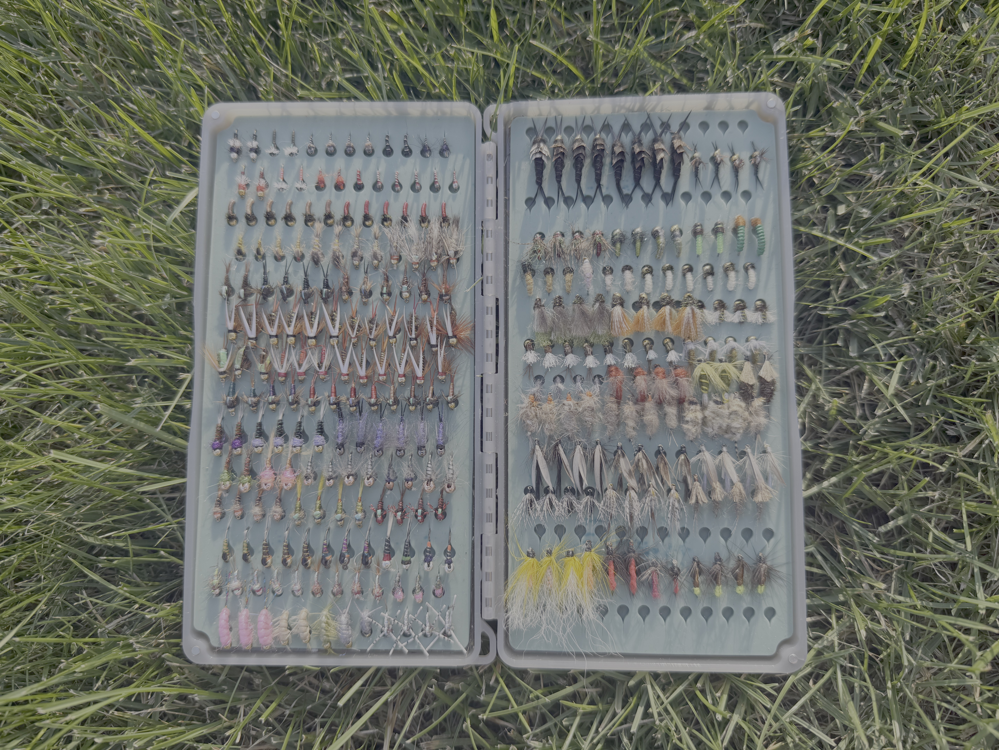

Fly Guide
Fly fishing involves using artificial flies to imitate the natural food sources that trout feed on in streams and rivers.
Different types of flies are designed to imitate insects, baitfish, and other aquatic organisms at various stages of their life cycles.
The three main categories covered in this guide are dry flies, nymphs and emergers, and streamers.
Dry Flies
Dry flies are artificial flies designed to float on the surface of the water.
They typically imitate adult aquatic insects, such as mayflies and caddisflies, or terrestrial insects that fall into the water.
Dry fly fishing can be especially exciting because anglers can often watch trout rise to take the fly directly from the surface.
Common dry fly patterns include the Adams, Parachute Adams, Elk Hair Caddis, and Light Cahill.

Nymphs and Emergers
Nymphs imitate immature aquatic insects that live beneath the water's surface.
Because trout frequently feed underwater, nymph fishing can be productive even when there is little visible surface activity.
Emerger patterns imitate aquatic insects transitioning from their underwater stages into winged adults.
Common examples include Pheasant Tail Nymphs, Hare's Ear Nymphs, Zebra Midges, and soft-hackle emergers.

Streamers
Streamers are larger artificial flies that imitate baitfish, leeches, crayfish, and other aquatic prey.
Unlike dry flies, streamers are generally fished beneath the water's surface. Anglers may retrieve them through the water to imitate the movement of swimming prey.
Streamer fishing can be particularly effective when trout are actively pursuing larger food sources.
Popular streamer patterns include Woolly Buggers, Muddler Minnows, and Sculpzilla patterns.

Dry Fly Fishing in Action
One of the most exciting moments in fly fishing is watching a trout rise to take a dry fly from the surface.
The following video was recorded while fly fishing at Vitondale, Pennsylvania. It shows a brook trout rising to take my dry fly before being landed and released.
Helpful Fly Fishing Tips
Click the button below to reveal or hide a few helpful tips for fishing local trout streams.
Tips for Fly Anglers
- Observe insects on and around the water before choosing a fly pattern.
- Pay attention to water temperature, stream flow, and weather conditions.
- When fishing dry flies, try to achieve a natural drift without dragging the fly across the surface.
- When nymph fishing, experiment with different depths and presentations.
- Handle trout carefully and minimize their time out of the water when practicing catch and release.